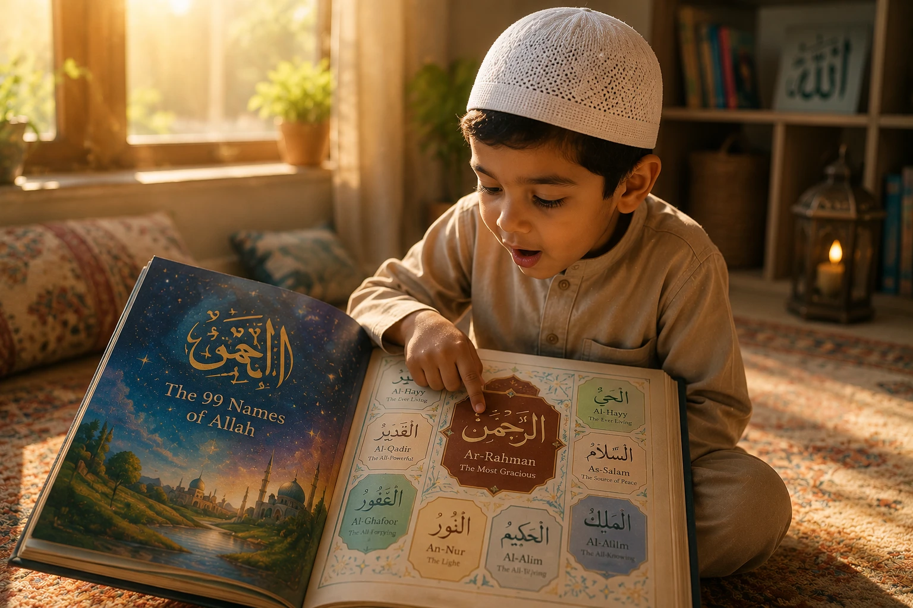
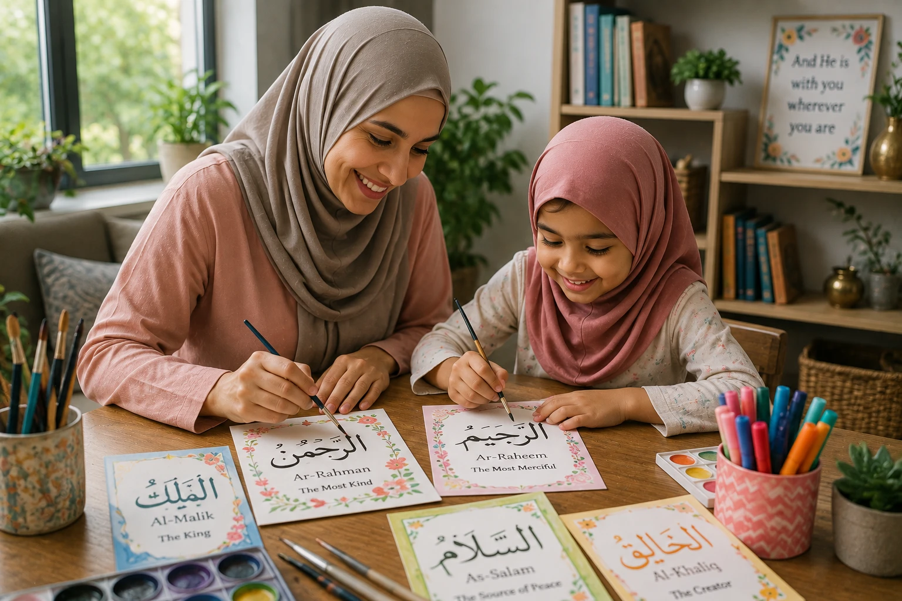

The 99 Names of Allah (Asma ul-Husna) are not just a list of beautiful Arabic words to be memorized for a school test. They are the keys to knowing Allah, the blueprint of the universe, and the ultimate source of comfort for a believer's heart. When a child truly understands that Allah is Al-Wadud (The Most Loving) or Al-Hafiz (The Protector), their entire worldview shifts from fear to profound trust. In this comprehensive guide, we will explore fun, simple, and deeply effective methods to teach your children the 99 Names of Allah, turning a theological concept into a living, breathing relationship with their Creator.
📖 In This Complete Guide, You'll Learn:
- The profound Islamic significance of knowing Allah's names (and the promise of Jannah)
- Which names to teach first (and which ones to avoid in the early years)
- 5 creative, hands-on activities to make learning Asma ul-Husna fun
- How to connect each name to your child's daily life and personal duas
- The best books, apps, and resources for teaching the 99 Names
- Common mistakes parents make when teaching Islamic theology to kids
🔑 Key Takeaways
- Focus on meaning and connection, not just rote Arabic memorization.
- Start with the most comforting and relatable names (Ar-Rahman, Al-Wadud, Al-Khaliq).
- Use the "Name of the Week" method to prevent overwhelm and build deep understanding.
- Teach them to use the names in their personal duas (e.g., "Ya Razzaq, provide for me").
- Make it a joyful, visual, and interactive family experience, not a chore.

📑 In This Article
- The Promise of Jannah: Why the 99 Names Matter
- Where to Start: The Best First Names for Kids
- Method 1: The "Name of the Week" Approach
- Method 2: Creative Arts & Crafts
- Method 3: Nature Scavenger Hunts (Tafakkur)
- Method 4: Connecting Names to Daily Dua
- Best Resources: Books, Apps, and Videos
- Common Mistakes to Avoid
- Frequently Asked Questions
- Final Thoughts
The Promise of Jannah: Why the 99 Names Matter
Before we dive into the "how," we must understand the "why." The Prophet Muhammad (peace be upon him) gave us a beautiful and clear incentive to learn these names.
The Prophet (PBUH) said: "Allah has ninety-nine names, one hundred minus one. Whoever memorizes them (believes in them and acts upon them) will enter Paradise."
— Sahih Al-Bukhari 2736 & Sahih Muslim 2677Scholars explain that "memorizing" (Ahsaha in Arabic) doesn't just mean reciting them like a poem. It means to understand their meanings, to believe in them, and to reflect on how they manifest in our lives. When we teach our children the 99 Names, we are literally giving them the map to Jannah. We are helping them build a relationship with Allah that is based on knowledge, love, and awe.
Where to Start: The Best First Names for Kids
A common mistake is starting from Ar-Rahman and going in strict alphabetical order, which can quickly become overwhelming and includes names that are too complex or frightening for a young mind (like Al-Muntaqim, The Avenger).
Instead, curate a list of names that are highly relatable to a child's daily experience. Start with these foundational names:
- Ar-Rahman / Ar-Rahim: The Most Merciful. (Allah loves us and forgives us).
- Al-Wadud: The Most Loving. (Allah's love is bigger than mommy and daddy's love).
- Al-Khaliq: The Creator. (Allah made the stars, the animals, and you!).
- Ar-Razzaq: The Provider. (Allah gives us our food, our home, and our toys).
- As-Salam: The Source of Peace. (Allah makes our hearts feel safe and calm).
- Al-Hafiz: The Protector. (Allah keeps us safe from bad things).
- As-Sami / Al-Basir: The All-Hearing / The All-Seeing. (Allah always hears our duas and sees our good deeds).
Method 1: The "Name of the Week" Approach
Don't rush. Quality is far more important than quantity. Dedicate one week to a single name. This allows the concept to sink in deeply.
How to Structure the Week:
- Monday (Introduction): Introduce the name in Arabic, its pronunciation, and its meaning. Use a colorful flashcard.
- Tuesday (Story Time): Read a story from the Quran or the Seerah that highlights this attribute. (e.g., for Ar-Razzaq, read the story of the birds in Surah Quraysh).
- Wednesday (Art Day): Let them draw or paint something that represents the name.
- Thursday (Dua Day): Teach them a specific dua using this name. (e.g., "Ya Hafiz, protect me from bad dreams").
- Friday (Review & Reward): Quiz them gently, praise their efforts, and give a small treat (like their favorite fruit) for learning about Allah.

Method 2: Creative Arts & Crafts
Children are tactile learners. They need to touch, build, and create to internalize concepts. Turn the 99 Names into an art project.
1. Asma ul-Husna Flashcard Painting:
Buy blank watercolor cards. Write one name in Arabic on the card, and let your child paint the background using colors that match the feeling of the name. (e.g., Bright yellows and oranges for An-Nur, The Light; soft blues and greens for As-Salam, The Peace).
2. The "99 Names" Jar:
Get a large, clear glass jar. Every time they learn a new name, write it on a beautiful piece of paper, fold it, and drop it in the jar. Watching the jar fill up over the months gives them a massive sense of accomplishment and visual progress.
3. Playdough Arabic Letters:
For toddlers and preschoolers, use playdough to form the Arabic letters of the names. This builds fine motor skills while familiarizing them with the script.
Method 3: Nature Scavenger Hunts (Tafakkur)
The Quran constantly commands us to look at the natural world as a sign (Ayah) of Allah's names. Take your learning outside!
The "Al-Khaliq" (The Creator) Hunt:
Go to a park or your backyard. Give them a checklist: "Find something Allah created that is green. Find something Allah created that flies. Find something Allah created that is tiny." When they find a leaf, say, "SubhanAllah, Allah is Al-Khaliq, He made this perfect leaf!"
The "Ar-Razzaq" (The Provider) Hunt:
Watch birds at a feeder or ants carrying food. Explain, "Look how Allah provides for these tiny birds. He is Ar-Razzaq, and He provides for us too!"
Don't just tell them; ask them! "What do you think this beautiful flower tells us about Allah?" Let them arrive at the answer themselves. This builds critical thinking and deepens their personal connection.
Method 4: Connecting Names to Daily Dua
The ultimate goal of knowing Allah's names is to call upon Him. The Quran says: "And to Allah belong the best names, so invoke Him by them." (Surah Al-A'raf 7:180).
Teach your child to use the names as "keys" to unlock their duas. Create specific scenarios:
- Before a test: "Ya Alim (The All-Knowing), help me remember what I studied."
- When they lose a toy: "Ya Wadud (The Most Loving), make my heart feel better."
- When it's dark and scary: "Ya Nur (The Light), fill my heart with peace."
- When they want something: "Ya Wahhab (The Bestower), please give me this if it's good for me."
When they see their duas answered using these specific names, their Iman will skyrocket.
Best Resources: Books, Apps, and Videos
You don't have to reinvent the wheel. There are fantastic, high-quality resources available to support your efforts:
Books:
- "The 99 Names of Allah" by Omar Suleiman (Children's Adaptation): Beautifully illustrated and deeply meaningful.
- "My First Book of Dhikr" by Goodword Books: Great for toddlers, includes simple names.
- "Allah's Names" by Saniyasnain Khan: A classic, colorful board book series.
Apps & YouTube:
- "99 Names of Allah" App (by Greentech Apps): Interactive, with audio pronunciation and meanings.
- FreeQuranEducation (YouTube): Their animated videos on the 99 Names are visually stunning and perfect for kids.
- Omar & Hana (YouTube): They have catchy, memorable nasheeds for many of the 99 Names.
Common Mistakes to Avoid
If they can recite all 99 names in Arabic but don't know what Al-Ghaffar means, the primary goal is lost. Always prioritize meaning over pronunciation in the early years.
Never say, "You didn't clean your room, go memorize 5 names of Allah!" This associates the beautiful names of Allah with negative consequences.
Avoid names related to wrath, punishment, or complex divine decree until they are much older and have a solid foundation of Allah's mercy and love.
"Your cousin already memorized all 99!" Every child's spiritual journey is unique. Celebrate their personal milestones, no matter how small.
Frequently Asked Questions
Start with Just One Name Today
You don't need to teach all 99 names this month. Pick one name today—maybe Al-Wadud (The Most Loving). Sit with your child, tell them how much Allah loves them, and make a dua together. May Allah make the knowledge of His beautiful names the light of your children's hearts. Ameen.
What is your child's favorite Name of Allah? Share below!
Final Thoughts
Teaching your children the 99 Names of Allah is one of the most noble and rewarding endeavors a parent can undertake. It is not a race to the finish line; it is a lifelong journey of discovery. Every time they learn a new name, they are unlocking a new dimension of Allah's majesty and mercy. Be patient, be creative, and above all, make lots of dua. Ask Allah to open their hearts to the beauty of His names. Remember, you are planting seeds of Tawheed that will Insha'Allah shade them in this world and the next. May Allah make our children among those who know Him, love Him, and call upon Him by His beautiful names. Ameen.